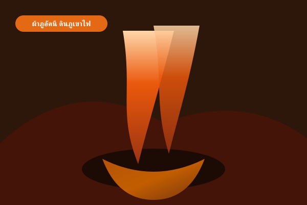

หัตถกรรมและผ้าไหม
อ.เฉลิมพระเกียรติ
ชุมชนบ้านเจริญสุข (ผ้าภูอัคนี)
ดินภูเขาไฟอังคารโบราณ หนึ่งเดียวในไทย
สัมผัสการนำดินภูเขาไฟที่ดับสนิทมาย้อมผ้าไหมและผ้าฝ้าย ได้สีดินเผาอบอุ่นอันเป็นอัตลักษณ์ และร่วมกิจกรรมพาแลงกับคนในชุมชน
089-625-5464
อ่านต่อ